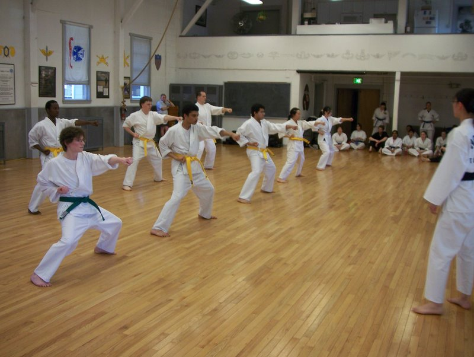
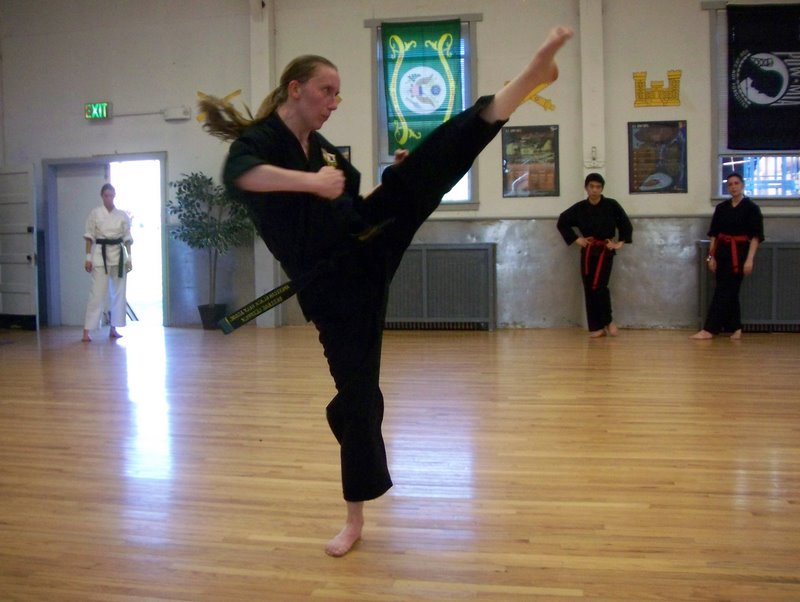
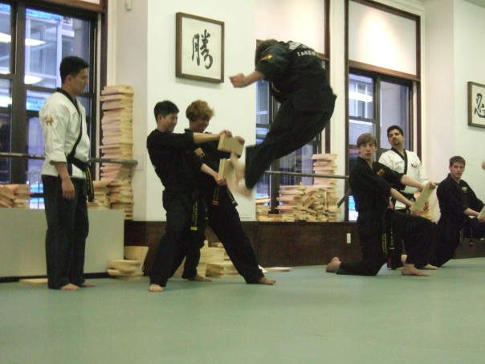
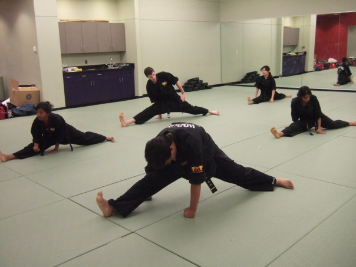

Welcome to the Johns Hopkins Tae Kwon Do Web Site!
News
6/4/09 - Summer Classes
Summer classes have finally started! They will be held through June and July, Mondays, Wednesdays, and Fridays from 6-7 PM in the third floor of the Ralph S O'Connor Rec Center. Note: These practices are half uniform. Beginners are more than welcome!
5/1/09 - Belt Test Pictures
Congratulations to everyone who tested at the 77th belt test for Johns Hopkins Taekwondo!
Color Belts looking sharp
Black Belt tests are intense!
4/21/09 - Belt Test
The next belt test is fast approaching. Keep up the hard work, everyone, especially those testing for advanced belt.
4/13/09 - New Officers
Officer elections took place tonight. Congratulations Jen, Julia, David, James, and Maria!
09/05/08 - Fall Demo
Welcome back to Hopkins! JHU TKD will be having our Fall Demo for interested students on Friday 9/12/08 at 6:30pm in the Ralph S O'Connor Rec Center. We are up on the third floor in the multipurpose room.
The only requirements for joining the club are access to the Ralph S O'Connor rec center, JHU affiliation of some kind (student, faculty, staff) and a desire to learn.
06/13/08 - Summer
Summer classes are Monday's Wednesday's and Friday's at 6pm in the Rec Center.
05/05/2008 - End of the year
Great job on the belt test everyone; especially all you yellow belts! Tonight from 6-8, let there be cake, promotions and goodbye's to those who will not be around next school year. Last class is Tuesday from 7-8 in the ROTC, a fun end of the year bag-kicking contest-relay class.
Have a great break and stay tuned for when summer classes start!
04/24/2008 - Belt Test
Next belt test is coming up in less than two weeks!
03/24/2008 - Pictures

Everyone after the belt test
03/10/2008 - The 72nd belt test of JHU went well!
There was a wonderful color gradient of belts this sunday and congratulations to the white's, yellow's, red's, green's, blue's, and browns that tested. Also, congratulations to all of the new team members! Grand master seemed happy about how many students were able to go up to Brooklyn and take classes with him.
Spring break is in a week so take it easy, and remember all your forms.
12/03/2007 - Semester is almost over!
Congratulations to all of you who got your new belts! For those of you who haven't tested yet, the mock test will be at 6pm in the Rec Center on Wednesday. Now with so many black belts, we'll have enough teachers to go around!
Last class is next monday.
9/11/2007 - Come to our DEMO!
Demo will take place on Friday the 14th, from 5:30-6:30 in the Rec Center 3rd Floor Evans Room. For those of you who wish to take part in the demo (yellow belts and team) e-mail desirae. Practice will be held on Tuesday from 6:30-7:30 or 8ish in the ROTC room and Wednesday from 7-8. The practices are not going to be difficult, we will be designing a routine to show the freshman.
Also, take note of the change of the white belt schedule. White belts now meet on Monday's in the ROTC building. Thanks for joining, all of you!
9/10/2007 - Welcome Back!
Welcome to a new year of Johns Hopkins Tae Kwon Do! Classes are starting for the Fall 2006 Semester (demo date and class dates pending). Remember these classes are free of charge, so stop by anytime to watch or just jump right in to a white belt class. On your first day, we suggest comfortable workout clothes, because it's hard to kick ass in jeans (while they are more attractive than sweats, its not worth it).
Why would you want to run on a treadmill, when you could burn calories doing this:
And you can become flexible!
Check us out on facebook, or send us an email at hopkinstkd at jhu!
8/1/2007 - Fall 07: Freshmen and Beyond
We‘re glad to see you‘re interested in Hopkins Tae Kwon Do. In the fall we will be holding a demo for anyone interested in the club to come check us out and see what we do. You will also get to hit some of our bags, which is always fun. Check out our FAQ on the left for more information.
More info about the demo will be posted in late August or early September. Also, come visit our table at the SAC fair for questions and to sign up for our email list.
8/1/2007 - Summer Classes
Most of you already know, but we are holding summer classes in the Rec Center MWF 6:30-7:30. The last day of formal classes will be August 10th. Feel free to use the room MWF from 6-8pm to practice on your own, but we will no londer be having any official classes.
2/14/2007 - Google Calendar
Happy Valentine's Day! On a completely unrelated note... We have created a JHU TKD Student Calendar on Google. If you like using Google Calendar, subscribe to ours, and you'll have a nice way to view your TKD schedule. Check the schedule page for details.
2/5/2007 - Spring 2007 Schedule
The (hopefully) final Spring 2007 schedule is posted on the schedule page.
2/5/2007 - Team Tryouts
Team tryouts will be held on 2/7 at 5:45 in front of the rec center. If you are late you cannot try out. Come dressed to run around the track, and bring your uniform and sparring gear for practice afterwards. Do not plan to run in your TKD pants!.
2/2/2007 - Newsletter!
Hopkins Tae Kwon Do is on the cover of the JHU newsletter, yay. So pick one up, frame it, and mount it on your wall (unless you are one of the people in the picture, in which case you are very embarrassed and have been devising methods of destroying all copies of the newsletter).
2/1/2007 - First White Belt Practice
The first white belt practice will be held tonight at 6:30 in the ROTC room. A member of JHU TKD will be at the Rec Center at 6:20pm to lead people over to the ROTC room. Please wear comfortable clothes to work out in, like sweat pants, warmup and track pants, and a t-shirt.
2/1/2007 - We're Back
JHU decided to change the way I log in to the server without telling me, so the site was stale for a little while. Now we are back and the information posted here can once again be trusted. A new schedule is up for 1/29-2/2. Next week there will be a more final schedule.
1/4/2007
Intersession practice times have been posted to the schedule page.
11/15/2006 - Belt Test
The next belt test is scheduled for Sunday, December 3rd at 1pm.
9/8/2006 - Demo
We will be having a demo next Friday, 9/15/06. Come see current members do some basics, some kicks, and some forms. You will see students who have been taking TKD for 1, 2, 3, or more years to get a sense of what we teach.
At the end, we'll give the new people a chance to take out some back-to-school aggression on some pads. We'll teach you a few moves and let you try them out. Feel free to picture your grouchy old history Prof, or maybe that physics TA with an accent thicker than molasses in January.
Come dressed in workout clothes, such as warm-ups, sweat pants, shorts, t-shirts, etc. Jeans are a bad idea, since they are very restrictive of motion. If you have previous martial arts experience and you happen to have your uniform, feel free to wear the pants since they are very comfortable, but you can leave your uniform at home.